- 2026-09-29🧯 GPU rules for every job: all memory caps together at most 95% of the card, at least 85% busy (15-min mean) while a training stage runs, MFU reported beside busy %; copy stages run with expandable memory segments, resume once from their last checkpoint with video checkpointing on after an out-of-memory crash, and start with a 2-step test on the arm's 64 heaviest items. A scorer running alone gets the whole GPU. Known data issue: 543 of 100,000 SpaceR-151k records carry an option list built from word initials ('NY' for No / Yes), so their graded-stage reward would always be 0; the copy stage trains on the answer text and is unaffected; the converter is fixed before any SpaceR graded run.
- 2026-09-29📏 Lenient reader, four fixes (owner-approved after a list of five failure cases): (1) 'X is higher / lower / closer / further than Y' answers to 'which object is higher / lower / ...' questions (X when the question asks the same comparison, Y when the opposite); (2) yes/no questions answered by a description ('Is A directly underneath B?' -> 'A is beneath B'), with 'not' as a negation unless it is part of an object's name; (3) -ly forms of direction words (perpendicularly); (4) synonyms (opposite directions -> very different directions, beneath / under -> below, over -> above), tried only after the unchanged rules find nothing. Re-reading every answer in full: 0 earlier reads changed, 2,352 more read (1,404 comparative, 517 synonyms, 431 yes/no). Hand check of the new reads: 84 of 85 correct; the misread ('"bus do not stop here" sign') was fixed and then read correctly. Jev (TypeSafe) is kept as an optional second opinion on the answers the rules skip, never the headline reader.
- 2026-09-29🧠 MMStar general check (1,500 questions, 512 tokens, lenient reading; the base model's strict 34.1 was 54% unreadable explanations): base 60.7 (12% still unreadable, so a lower bound). Paired against the base: SpatialQA-50K +3.9 (above zero), OSD-8.7M -1.9 (within noise), SAT-175K -3.9, SAT-175K graded 200 steps -3.7, Warehouse-500K -3.9 (below zero), SAT-175K tagged graded -42.9 (repeated answers). Scores: general_mmstar_lenient.csv.
- 2026-09-29📉 Base 3DSR with room to answer: 54.4 strict, 56.1 lenient at 512 tokens (47.0 / 47.9 at 64 tokens; cut-off answers 21% -> 2%). The base model explains before answering, and the explanation is worth about 8 points on 3DSR. Every copy-stage row now sits below the base on 3DSR (paired: SpatialQA-50K -1.4, SAT-175K -3.9, OSD-8.7M -3.9, Warehouse-500K -20.6, all below zero): the copy stage teaches one-letter answers and the model stops explaining. Real gains over the base remain on SAT-175K ViewSpatial (+1.7) and SpatialQA-50K OmniSpatial (+8.7). A drop on one test for every dataset points at the shared recipe as much as at the data; open question for the owner.
- 2026-09-29⚖️ Graded stage at 200 steps (
plain, SAT-175K, dev sets only), result: graded stages stay paused. Repeated answers 0% on all 4 dev sets, but the dev average is 0.642 against the 0.645 bar (the tagged graded model); it ties the copy stage exactly (0.642). Per set against the copy stage: EmbSpatial 0.706 / 0.729, SAT val 0.895 / 0.884, SpatialRGPT 0.400 / 0.351, VSI hold-out 0.566 / 0.603 (100 steps: average 0.636). During training 80% of the 8-answer groups had one reward for all 8 answers, so most SAT questions gave the graded stage no signal: the copy-stage model already answers them consistently. Decision on graded runs for all arms (62-81 GPU-hours) rests with the owner. - 2026-09-29✂️ 3DSR-Bench answer budget 64 -> 512 tokens for every row, decided before the rerun: 21% of the base model's 3DSR answers were explanations cut off at 64 tokens, before any answer, which lowers the base row only (copy-stage rows answer with one letter). Scoring is greedy, so a row whose answers ended within 64 tokens scores the same; only the base model's 3DSR answers are regenerated. MMStar (1,500 questions) is added as a general check with a 512-token budget, reported apart from the tests.
- 2026-09-29📏 Lenient answer reading and the below-base test, decided before any rescored number was seen. Strict exact matching left 22% of the base model's 3DSR answers and 15% of its OmniSpatial answers unreadable, and 49-98% of Warehouse-500K and OSD-8.7M answers on some tests (six cells below chance). Every row, base included, is rescored in two steps: the toolkit's exact matching (VLMEvalKit
can_infer: an option letter or an option's exact text), then fixed rules for the answers it cannot read (an explicit final "Answer: X"; then, on the conclusion only, meaning the text after the last therefore / so / the answer is, or the last sentence of a complete answer, with an answer cut off before any conclusion left unreadable: one option's text as a whole phrase in the answer, the longest phrase winning over the phrases inside it; yes or no as the first word for yes/no options; exactly one number equal to one numeric option; word overlap with a clear winner); no LLM, so a rerun gives the same result. 100 rule-read answers are checked by hand and the share read correctly is reported. The lenient score becomes Table 1's headline; the strict score and the share of unreadable answers stay beside it. A cell counts as below the base only when the 95% paired interval of (row minus base) over the same questions lies entirely below zero. The graded stage (R1) is retested with theplainrecipe at 200 steps on SAT-175K, dev sets only, under the 2026-09-28 adoption rule; a variant that also stays at or above the copy stage (R0) dev average within its interval is the one that can return. - 2026-09-29📚 Four additions to OURS from a read of 11 accepted spatial dataset papers (NeurIPS 2024 to 2025 Datasets and Benchmarks, ICML 2026, AAAI 2026): (1) a video question is kept only if its objects cover at least 5% of pixels in a shown frame [S32]; (2) answer-preserving twins, a change that must not flip the answer [S33]; (3) answers balanced per question type, with question-only, noise-image and most-frequent-answer rows in SpatialGym-Bench [S32][S34]; (4) a human ceiling on a 200-item SpatialGym-Bench slice [S35][S36]. The real-photo anchor stays out of v0. Failure-cause rows 8 to 11.
- 2026-09-28🎞️ Video items (VSI-590K, SpaceR-151k): the 8 frames of a video item are capped at 512 px (256 picture tokens each, about 2,050 per video), still pictures keep 1,024 px; the same rule for every arm's video items. At 1,024 px an 8-frame item reaches 8,192 picture tokens, past the recipe's 4,096-token limit, and the trainer cut samples inside a picture (pilot: 9,654 tokens vs 13,760 features). The finished image arms have no video items and are unaffected. 63% of the VSI-590K sample is video.
- 2026-09-28🔧 Scorer fix: EASI writes 3DSR-Bench as a 0-1 fraction and the other sets as 0-100, and the scorer guessed the unit from the value (divide when above 1), so a score under 1% was read 100 times too high (Warehouse-500K ViewSpatial stored as 85.8, true 0.86). Units are now fixed per set; every stored base and SAT-175K score recomputes unchanged, and the Warehouse-500K row was recomputed from EASI's own table.
- 2026-09-28📋 Table 1 reports each rival dataset's copy-stage (R0) score while graded stages are paused: the grid fills as each copy stage lands, and the 62-81 GPU-hours of graded runs (500 steps at 74-97 s each, six arms) are not spent. The graded stage (R1) can return as an extra row once a variant passes the dev-set rule.
- 2026-09-28⚖️ Graded-stage prompt rule applied, result: graded stages stay paused. The
plainfix test (100 graded steps on SAT-175K) removed the repeated answers (0% on all 4 dev sets, against 22-31% fortagged) but its dev average is 0.636 against 0.645 for the tagged graded model (EmbSpatial 0.634 / 0.668, SAT val 0.879 / 0.804, SpatialRGPT 0.443 / 0.405, VSI hold-out 0.588 / 0.703), so the adoption condition fails. Neither graded variant beats the copy-stage model on the dev sets (average 0.642). Script: grpo_prompt_rule.py. - 2026-09-28🛑 Graded stage (R1) flaw found on SAT-175K, before any other arm's graded stage: trained with answer tags, the graded model repeats its answer until the token limit on test-style prompts (repeated answers: 3DSR 78%, SAT val 31%, EmbSpatial 22%, VSI hold-out 22%; copy-stage model 0%). SAT-175K R1 3DSR reads 9.5 against 52.2 for R0 because the official 3DSR grader rejects repeated answers. Graded stages are paused (copy stages continue for every arm); a candidate fix (
grpo_prompt: plain: test-style prompt, reward read from the first line, format credit only for one stopping line) is tested on SAT for 100 steps and compared on the dev sets only. Adoption rule (decided 2026-09-28, before the result):plainbecomes the recipe for every arm, SAT included, if repeated answers are under 2% on each of the 4 dev sets and the dev average is at least the tagged graded model's; otherwise graded stages stay paused. Also fixed: a true count of 0 could never earn the count reward. - 2026-09-27⚡ Speed-only recipe settings (same maths, all arms from Warehouse-500K on; SAT-175K's copy stage kept, its grading stage uses the unchanged settings): copy stage runs Liger kernels with gradient checkpointing off at 4 x 8 samples (32 per update as before): 4.73 -> 3.41 s per step, 58.7 -> 32.5 GB, first-step losses within about 1%. Grading stage unchanged (checkpointing on, 64 answers per pass, 256 per update): the best alternative gained 12% at 91 GB. Measured MFU before: copy stage about 14%, grading stage about 8% of about 439 dense BF16 TFLOPS. Details: SPEEDUP_checklist.md (lab notes, private).
- 2026-09-27🔧 GPU bring-up fixes, before any arm trained (all arms get them): (1) the copy stage now computes the loss on answer tokens only; TRL's vision collator had put every token in the loss, including the picture placeholders (start loss 19.9, 9% token accuracy; after: 0.18, 89%); (2) the vision patch embedding runs as one matrix multiply instead of a Conv3d whose bf16 kernel took 50 s per 8 pictures under PyTorch 2.9 (copy step 230 s -> 4.5 s, same weights, differences at bf16 rounding); (3) the copy stage loads the model in bf16 on the GPU (TRL's default is float32 with automatic device placement); (4) Hub streams resume at the dropped byte (a 9 GB Warehouse archive broke at 96%). Measured on SAT-175K: copy step 4.5 s at 47 GB (32 samples per forward was slower: 6 s, 84 GB), grading step 74 s at 64 GB. Batched scorer vs the one-question scorer: 45 of 48 graded answers equal; the 3 differences are first-token near-ties (gaps 0.000, 0.000 and 0.25 nats), and the one-question scorer itself flips on one of them after only the patch-embedding change.
- 2026-09-27🧠 Backbone switched to Qwen3-VL-4B-Instruct before any GPU score existed (runs on the installed stack: transformers 4.57.6, vLLM 0.12, TRL 0.29; Qwen3.5 needs transformers 5.2+, which breaks the EASI scorer); Qwen2.5-VL-3B becomes the second-backbone check. Scoring uses a batched vLLM backend with the same prompts, image resizing and grading as the one-question-at-a-time scorer, admitted only after matching it on a 50-question slice. Checkpoints go to the private bucket anonymousML123/spatialgym-ckpt. Recipe: 10 data-loader workers per training run.
- 2026-09-27💾 GPU run settings: rent 1 TB disk, 64 GB+ RAM, 16+ CPUs, 1 Gbps+ (full rival data on the Hub is about 670 GB); training opens pictures from their paths when a batch is drawn instead of caching a copy of every image; each arm's pictures are deleted once both of its adapters are scored, so at most two arms sit on disk. Sub-steps and owners: CHECKLIST.md.
- 2026-09-27🧮 Step 3 code built and tested on the laptop: the scorer now keeps every question's verdict and skill label, reports a 95% interval (1,000 resamples of whole questions; 3DSR-Bench keeps flipped copies together) and per-skill scores; known-answer check on 7 sets returned exactly the expected 50%.
python -m sgeval.gridbuilds rival_matrix.md (references, R1 and R0 arms, R1 minus R0, skills weakest first) and fills table 1's four local tests with whole-test R1 scores until the claimed subsets are picked; the queue rebuilds it after every arm. VANTAGE-Bench export: pillar II (Spatial: grounding, pointing, Astro2D) only, through the official harness (commit 3d69b4a, own venv), answer extraction by exact matching, trained arms merged into full weights; it writes submission.tar.gz and never uploads. Finished steps exit without Python shutdown, because PyArrow can deadlock there and hang the queue. - 2026-09-27🔁 Step 2 code built and tested on the laptop (train/): 6 converters (SAT-175K, Warehouse-500K, VSI-590K, OSD-8.7M, SpatialQA-50K, SpaceR-151k) each built 8 items in one shared format; the shared recipe ran end to end with a tiny model on CPU; a job queue scores the base model, then per arm trains, scores both stages, syncs checkpoints to a private HF Storage Bucket and appends to results/step2_scores.csv, with the next arm downloading while the current one trains and finished steps skipped on restart; 13 unit tests pass. Grading stage: every question ends with "Give your final answer inside
" and only the tagged text is graded, for every arm, because rival answers are sentences naming several regions or numbers. vLLM shares the one GPU with training (colocate mode, 30% of memory). - 2026-09-27🏋️ Step 2 design: every arm trains the same number of steps on 100K samples drawn from that rival's full released dataset (one full pass over each full dataset is parked for later: ~16 GPU-days); RoboSpatial-1M is dropped because its training set was never released (6 arms: Warehouse-500K, SAT-175K, VSI-590K, OSD-8.7M, SpatialQA-50K, SpaceR-151k); training uses TRL (SFTTrainer, then GRPOTrainer with LoRA); GRPO trains only on each arm's checkable items (multiple choice, yes/no, numbers), graded by the scorer's rules; HF-hosted data is streamed and only sampled files are kept; OSD's Open Images photos are prefetched in bulk in the background.
- 2026-09-27🧮 Scorer built and tested on the laptop (eval/): EASI's official loaders and rule-based scoring for MMSI, ViewSpatial, 3DSR, OmniSpatial and EmbSpatial; own loaders for SAT-v2 val, SpatialRGPT-Bench (regions drawn as labelled boxes; clock-direction and within-25% rules) and the VSI-590K hold-out; chance, question-only and shuffled-image rows; all 8 local sets ran end to end with a 4-bit Qwen2.5-VL-3B on 2 items each; 8 unit tests pass. The full base-model scores are the first GPU job.
- 2026-09-27📡 VANTAGE-Bench is a final external check, not a grid column: its answers stay on NVIDIA's server (2 uploads a day, 30 public for life, 5 private previews), so only OURS, the strongest rival and the base model are submitted, once, at the end.
- 2026-09-27🖥️ Compute workflow: code is written and tested on the laptop (about 200-item slices per rival and test, converter and checker unit tests, one 10-item end-to-end run on CPU or MPS), then cloned from GitHub onto a vast.ai RTX PRO 6000 where the full data is downloaded from the Hub; checkpoints go to a private HF Storage Bucket, score tables to git; the .env is copied to the instance by hand; the instance is deleted, not stopped, after each run.
- 2026-09-27🧱 Baselines first: no OURS data is generated until the 7 × 5 rival test matrix and the rival dev matrix exist; the SpatialGym-Bench spec is written in parallel and its held-out split is locked before any score is seen.
- 2026-09-27🧹 Consistency pass: 🏁 marks OURS everywhere, one spelling "(OURS)", uniform -Bench names on every tab, SpaceR-151k (🥋) added to score table 1, one emoji per meaning, one grid name, dev sets stated as 4 plus a sim slice, table-1 cells defined as claimed subsets.
- 2026-09-26📊 Score table tab simplified to two skeletons (dataset vs 6 rival datasets on 5 tests; SpatialGym-Bench vs 5 rival benchmarks); the detailed table moved to Appendix.
- 2026-09-26🏆 Zero-shot leaderboard skeleton added under OURS benchmark; Before and After result-table skeletons added to the rejection-risk tab; both cite verified arXiv papers with the same layout.
- 2026-09-25⚠️ Rejection-risk tab added: five risks, each with our numbers and its fix.
- 2026-09-25🛡️ Review-driven hardening from the AAAI-27 and ARR feedback on the two earlier papers: ablation ladder with one fixed OURS config; the proposer reads the DEV table, never the tests; camera prior from Warehouse-500K metadata and mounting specs, not VANTAGE-Bench items; 3 seeds for OURS and the closest rival per claimed subset; a second backbone with rank correlation; blind and shuffled-image controls; SpaceR-151k trained under R1 as the RL-native reference; chance baselines, memorization gap and a measured viewpoint figure.
- 2026-09-25🌐 The public spatialgym repo stays public under the author's handle before submission (decided; risk: double-blind venues, a reviewer identified the authors of an earlier paper from a preprint).
- 2026-09-24🎯 Alignment pass: title hook now also asks what a reward on every question adds; grid heading names the skills exact state buys; score table gains a Δ R1 minus R0 row and an RL-track row; plan step 5 packages SpatialGym-Bench as an environment.
- 2026-09-24🏷️ Named: SpatialGym-100K (the dataset; 100K is the target size until the generator has run) and SpatialGym-Bench (the held-out twin test). Title hook: which spatial skills does exact simulator state buy that a million real photos cannot?
- 2026-09-24✂️ Redundancy merges applied: the Five tests table folded into the OURS benchmark table, the rivals table lost its "wall" column, Fixes rows 1 to 4 point at the grid.
- 2026-09-24🗂️ Page reorganized into three tabs: OURS novelty, Execution, Appendix; header rewritten as a problem statement.
- 2026-09-24🎮 The RL track of OURS benchmark ships in v0 (frozen-seed prompt generator plus checker reward).
- 2026-09-24📏 Trust in the sim test rests on the Spearman check of all arms against the five real tests; no real-photo anchor slice in v0.
- 2026-09-24🧪 Dataset plus benchmark: SpatialGym-Bench (OURS), the held-out twin test, is the second contribution, frozen before generation and scored once per release; 🅿️1 moves to category 2 on the category grid (lab notes, private).
- 2026-09-24🧾 Every arXiv ID in this plan was checked against the arXiv API; rival scoring facts come from rl_env_subjective_rewards.md (lab notes, private).
- 2026-09-21🥊 Six rivals, all non-RL-native; claims on pre-registered subsets; untrained reference rows kept apart (see Plan 01 (lab notes, private)).
- 2026-09-21🧾 Recipe R1 for every column: copy answers, then grade own tries (GRPO) with answer match plus format reward.
- 2026-09-21📄 Plan compacted; sibling project: Plan 03, humanoid benchmark plus dataset (lab notes, private).
SpatialGym-100K on SpatialGym-Bench: which spatial skills does exact simulator state buy that a million real photos cannot, and what does a reward on every question add?
- 🎥 The gap. Warehouse and smart-space cameras look down from 8 to 20 ft. Every public spatial training set looks from eye level, or asks four question types about stills with no people and no second view; none ships a reward interface for RL.
- 📉 The stakes. On the five public tests that ask these questions, the best models score 31 to 60 percent; humans reach 97 on MMSI-Bench.
- 🏭 The move. One simulator generator with exact answers and twin scenes trains a 3B model by grading its own tries and yields a held-out benchmark no model can memorize.
- 🎯 The bet, pre-registered. One frozen recipe, five released rivals plus one RL-native reference, five tests we do not own: on the subsets our cameras cover, our data beats every rival, and the gap between copying answers and grading tries (R1 minus R0) shows what a reward on every question adds. A hypothesis until the score table has numbers.
What each training set actually looks like, from verified samples only: 🗃️ rows pulled from the Hugging Face viewer API or the repos' own files and 📄 example figures from the arXiv HTML of each paper, each with its source. Nothing here is generated or described from memory; a dataset with no verified sample says so. Fetched 2026-09-30.
🥊 Warehouse-500K (NVIDIA) 🟦 Isaac Sim Replicator RGB-D warehouses, about 95k frames · about 500k QA · paper · card
🗃️ gated set, fetched with an access-approved account: 8 rows from train_sample (2 per category: left_right, mcq, distance, count); numbered region outlines are painted from the rows' own RLE masks in the order of the <mask> tokens (click 'original' for the untouched frame); PNGs re-encoded as JPEG for the page
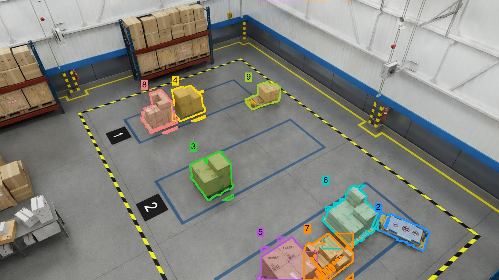
regions drawn · original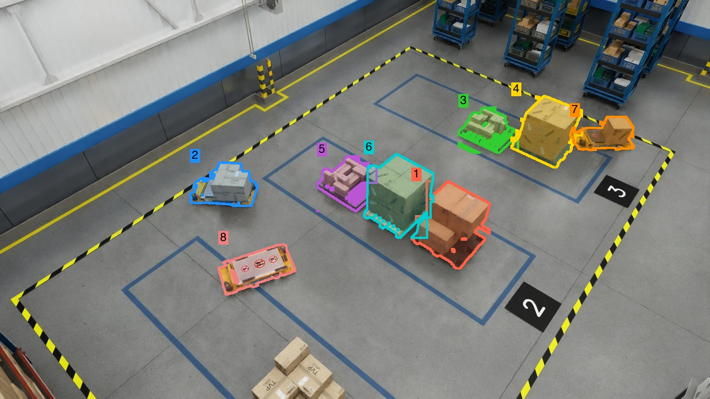
regions drawn · original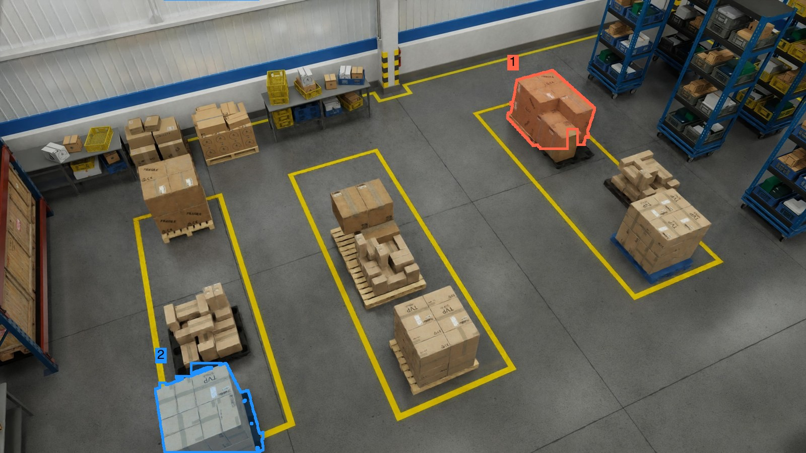
regions drawn · original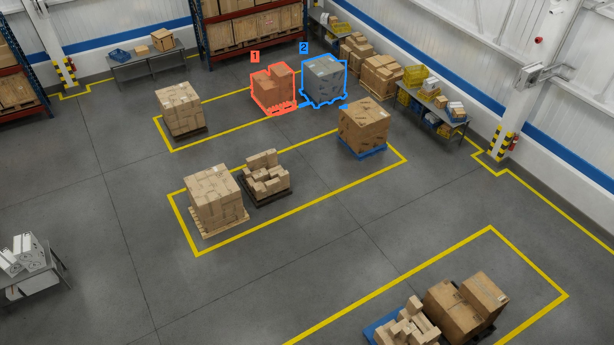
regions drawn · original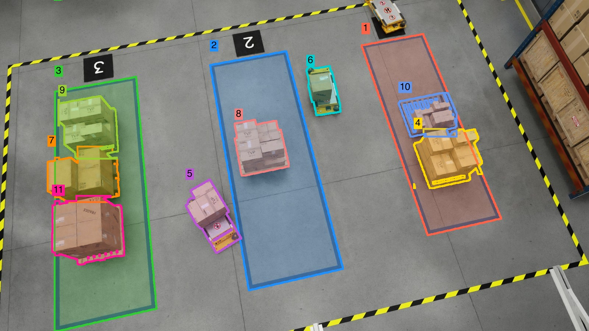
regions drawn · original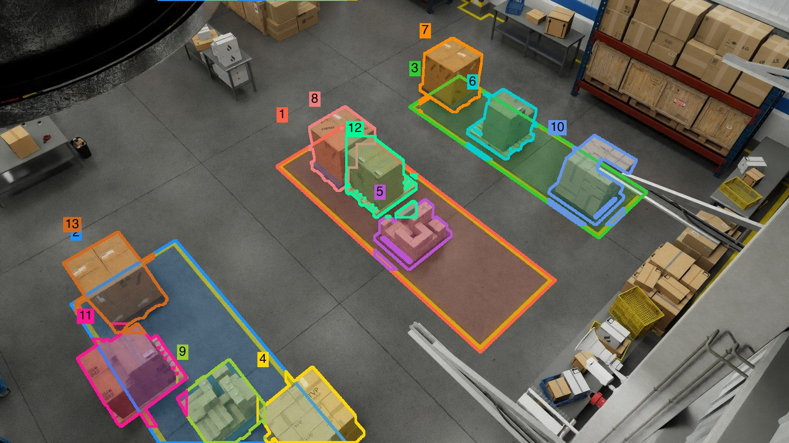
regions drawn · original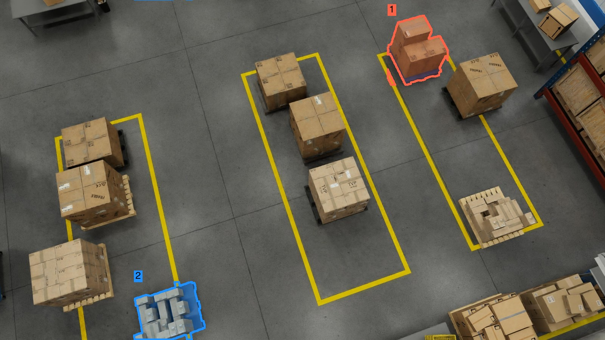
regions drawn · original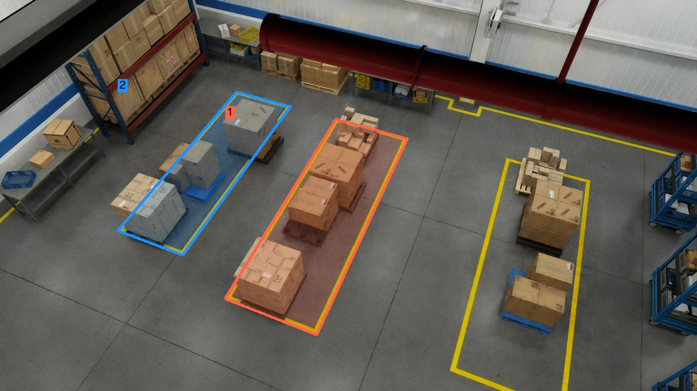
regions drawn · original🥊 SAT-175K 🟦 ProcTHOR, 22k apartments, eye level · 175k QA · paper · card
🗃️ rows from array/SAT-v2, the re-upload the SAT card itself recommends (the array/SAT viewer fails with HTTP 500); question_type is 'other' for static rows, kind inferred from wording

🥊 VSI-590K (Cambrian-S) 🟪 5 real scan sets, ProcTHOR walks, Hypersim, web tours · 590k QA · paper · card
🗃️ six frames extracted from robotics.tar.gz (the smallest archive, 1.1 GB); the other sources sit inside 3 to 90 GB archives, so those rows show the question and answer only; the paper filmstrips show their look
🥊 OSD-8.7M (SpatialRGPT) 🟩 OpenImages, 1M photos, 5M regions · 8.7M QA · paper · card
🗃️ the HF repo is annotation-only; photos fetched by id from the official Open Images bucket (image size matched each row's mask size); Region [0] and Region [1] outlines are painted from the rows' own RLE masks for the first question (click 'original' for the plain photo)
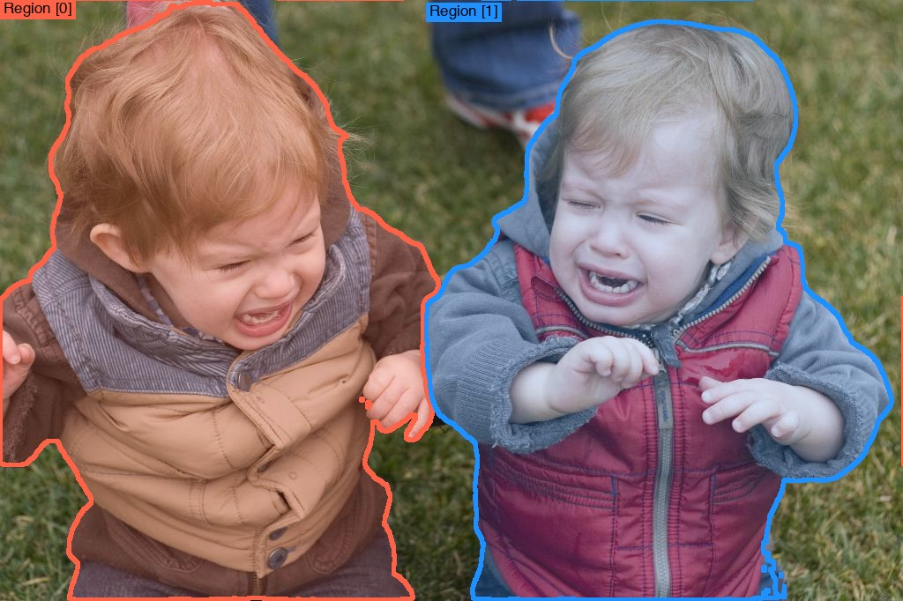
regions drawn · original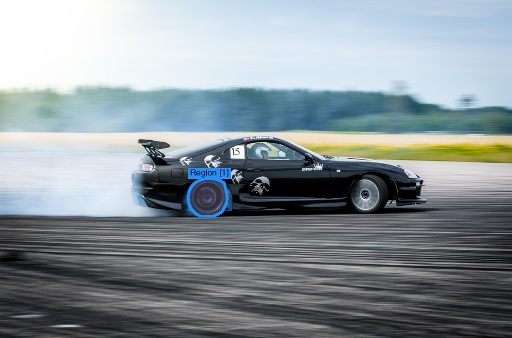
regions drawn · original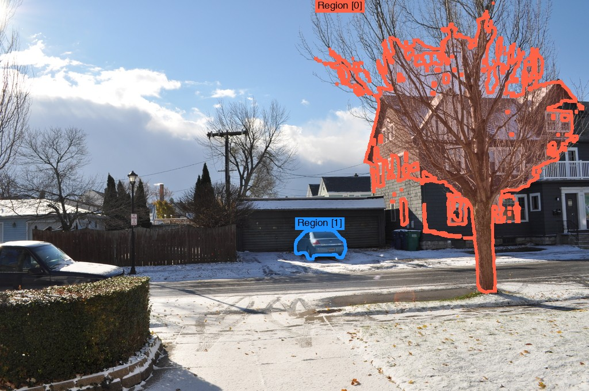
regions drawn · original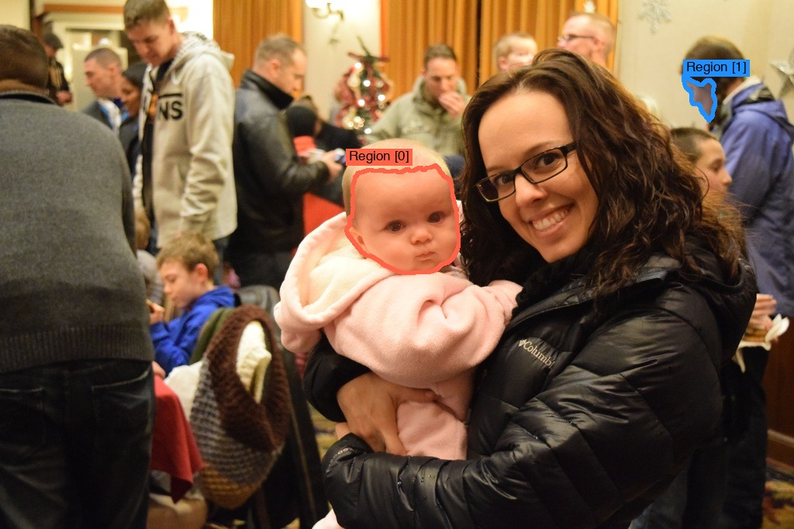
regions drawn · original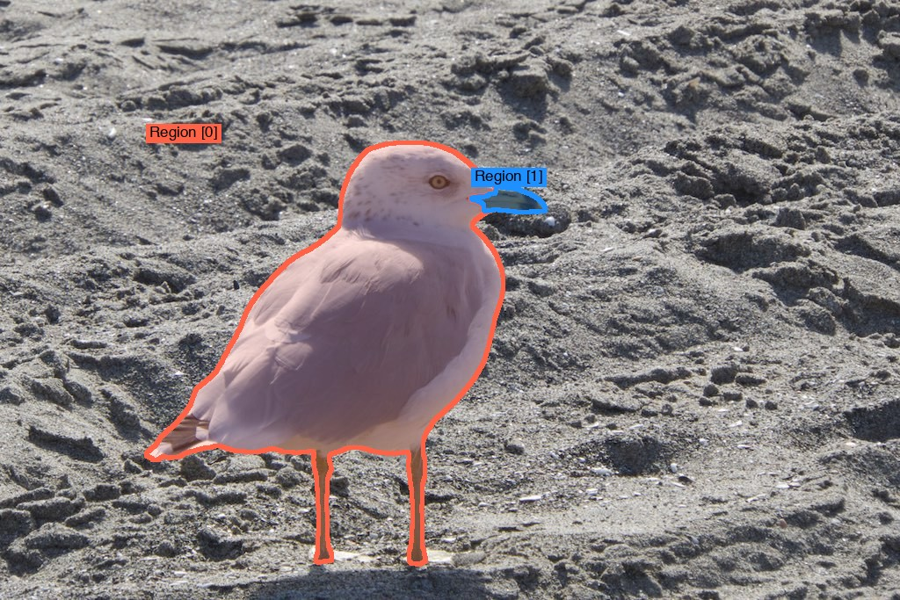
regions drawn · original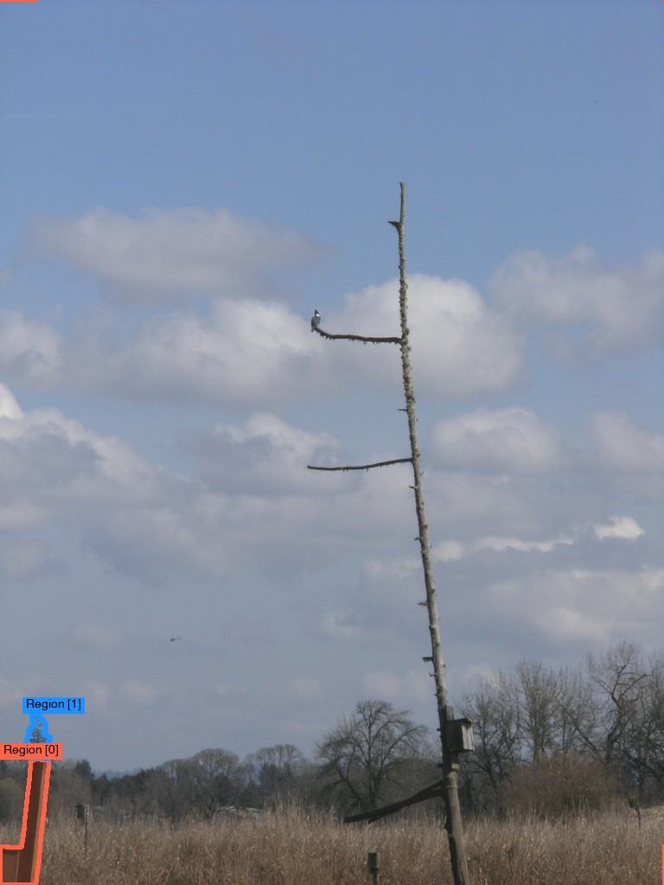
regions drawn · original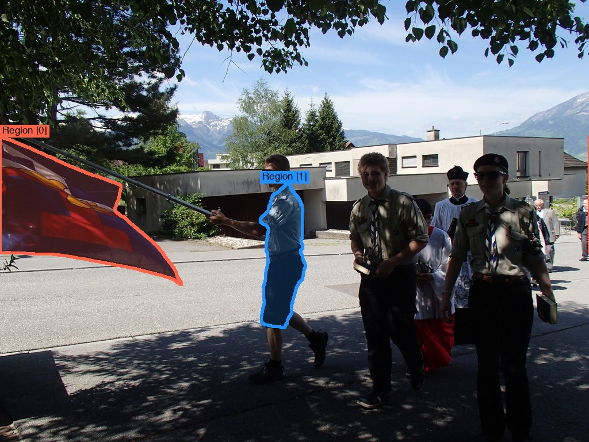
regions drawn · original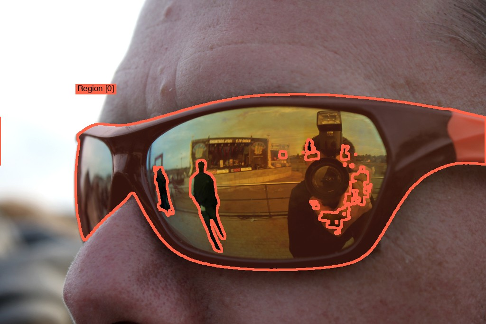
regions drawn · original🥊 SpatialQA-50K (SpatialBot) 🟩 COCO, Visual Genome, robot frames · about 50k images · paper · card
🗃️ gated set, fetched with an access-approved account: rows from the head of SpatialQA.json; 2d3ds and NYU Depth v2 images (with depth maps) pulled from the repo zips; low and middle level images live in the Bunny_695k data, so those two rows are text-only
🥊 RoboSpatial-1M 🟩 ScanNet, Matterport3D, 3RScan, HOPE, GraspNet scans · about 1M images, 3M QA · paper · card
🗃️ the 1M training set has no public repo (only the generator code); rows come from the RoboSpatial-Home benchmark, same question families
🏁 OURS: SpatialGym-100K (dataset) and SpatialGym-Bench (environment) 🟦 Isaac Sim, SimReady warehouses and smart spaces, fixed cameras · planned, nothing rendered yet
🧪 Test split, frozen before training: held-out camera levels 14 to 20 ft, scenes 41 to 50, asset set 2, twin types occlude and swap view, two-skill compositions (see the OURS benchmark tab).
Provenance files: assets/qual/<rival>/provenance_rows.json, provenance_figs.json; reports: ROWS_REPORT.md, FIGS_REPORT.md in the same folder. Images are reproduced for research comparison; each dataset keeps its own licence.
🥊 Six rivals plus one RL-native reference: what they are made of; the wall each hits is in the grid
| 🏷️ rival | 🎥 pictures | 🧾 labels and questions | 📦 size, paper | 🎮 RL-ready? |
|---|---|---|---|---|
| 🥊 Warehouse-500K (NVIDIA) | 🟦 Isaac Sim Replicator RGB-D warehouses, ~95k frames |
✅ exact 3D; templates + Llama-3.1-70B; left/right, region pick, distance, count |
~500k QA, 2508.13564, card | ✅ checkable, ❌ pairs, ❌ traces, ❌ RL split |
| 🥊 SAT-175K | 🟦 ProcTHOR, 22k apartments, eye level |
✅ exact 3D; 2-way MCQ; static relation, depth, count; dynamic ego and object motion, perspective |
175k QA, 2412.07755, array/SAT | ✅ checkable, 🟡 correct-vs-distractor only |
| 🥊 VSI-590K (Cambrian-S) | 🟪 5 real scan sets + ProcTHOR walks + Hypersim + web tours |
🟡 3D scans where they exist, pseudo for web; 12 video types: count, distances, sizes, directions, order |
590k QA, 2511.04670, card | ✅ checkable, ❌ pairs, ❌ traces, ❌ RL split |
| 🥊 OSD-8.7M (SpatialRGPT) | 🟩 OpenImages, 1M photos, 5M regions |
🟡 guessed depth (Metric3Dv2), boxes, intrinsics; 8M templates + 700k LLM QA |
8.7M QA, 2406.01584, card | 🟡 template part checkable, LLM part not |
| 🥊 SpatialQA-50K (SpatialBot) | 🟩 COCO, Visual Genome, robot frames |
🟡 sensor or ZoeDepth depth; depth values, proximity, relations, counts |
~50k images, 2406.13642 | 🟡 checkable from estimated depth |
| 🥊 RoboSpatial-1M | 🟩 ScanNet, Matterport3D, 3RScan, HOPE, GraspNet scans |
✅ exact 3D boxes; yes/no configuration, empty-space points, fit; ego, world, object frames |
~1M images, 3M QA, 2411.16537 | ✅ checkable, ❌ pairs, ❌ traces, ❌ RL split |
| 🥋 SpaceR-151k (RL-native reference, trained under R1) |
🟪 indoor video QA; sources and camera heights to be confirmed from [S16] before the row is scored |
✅ checkable answers built for spatially guided GRPO [S16] |
151k QA, 2504.01805 | ✅ RL-native: the one rival that ships a reward |
Legend: 🎥 🟦 simulator / 🟪 sim + real / 🟩 real . 🧾 ✅ exact labels / 🟡 estimated or model-written . 🎮 what ships for grading tries. SpaceR-151k is the RL-native reference and IS trained under R1 (decided 2026-09-25) so the RL half of the claim faces the closest prior art. Excluded as out of story or unavailable, cited as untrained references: Cosmos-Reason1 (30,304 grading prompts, GRPO) [S15], SVQA-R1 [S17], MultiSPA-27M (94.7% on BLINK multi-view) [S20].
💡 What OURS adds for RL (the novelty, per algorithm)
| 🏷️ algorithm needs | 🧪 what rivals give | 💡 what OURS ships from exact simulator state |
|---|---|---|
| 🎯 GRPO / PPO: a checker per prompt | exact match on MCQ or a number | graded credit: distance and size within tolerance bands, direction within 1 bin, count off-by-n; step checks on a written chain (each claim tested against the 3D state) [S10][S14] |
| 🎯 GRPO / PPO: hard prompts | fixed difficulty | difficulty knobs logged per sample (occlusion %, object count, camera tilt, distance ratio) for curricula and pass-rate binning |
| 🔀 DPO: chosen vs rejected | none, or a random distractor | typed hard negatives: the rejected answer is the exact failure a model makes (mirror flip, wrong reference frame, off-by-one, occluded object counted), built from the twin scene, not edited by an LLM [S6][S18] |
| ⚖️ KTO: good or bad labels, unpaired | none | every model try labelled by the checker, plus the twin rule: an answer that does not flip when the scene flips is bad [S17] |
| 🔁 twin consistency reward | SVQA-R1 flips the picture in 2D [S17] | the object or camera moves in 3D, occlusion and depth change with it, so the reward cannot be gamed by symmetry |
| ⏱️ VANTAGE-Bench-style timing and tracking rewards | nothing checkable | event start/end from the event log, track IoU from per-frame poses: the two tasks where every model is weakest [S3] |
| ♾️ endless prompts | fixed files | a generator plus checkers, so RL never runs out of fresh prompts [Reasoning Gym style, 2505.24760] |
Legend: 🎯 policy-gradient methods / 🔀 pairwise / ⚖️ unpaired / 🔁 consistency / ⏱️ temporal / ♾️ procedural. Not novel on its own: grading tries [S13], view-consistency [S17], hard-negative DPO [S18]; the novelty is that all of these come for free and exact from one simulator state, for camera views no rival covers.
🧪 OURS benchmark, SpatialGym-Bench: the five real tests, what each asks and claims, against ours
| 🏷️ benchmark | ❓ asks, today's best, and 🏆 the claimed subset | 📏 how it scores | 🎮 RL environment | 🔁 twins, held-out design | 💡 what OURS adds against it |
|---|---|---|---|---|---|
| 📋 VANTAGE-Bench 2609.09396 | real fixed-camera video, 8 tasks (events, VQA, pointing, boxes, timing, captions, tracking); timing and tracking weakest, best under 56 mIoU. 🏆 claimed: 6 grounded tasks; captions and VQA reported | accuracy, macro F1, temporal mIoU, tracking AUC on a fixed set | ❌ none | ❌ no twins, fixed items | event start and end from the event log, tracks from per-frame poses, graded per item; endless fixed-camera prompts |
| 📋 ViewSpatial-Bench 2505.21500 | real photos with people; direction from the camera or a person's eyes, 18 bins, 5 tasks; 43k targeted items moved a 3B model +46. 🏆 claimed: human-perspective tasks | multiple-choice accuracy over 18 direction bins | ❌ none | ❌ none | people with exact body orientation; direction graded within 1 bin instead of right or wrong |
| 📋 MMSI-Bench 2505.23764 | 1,000 real multi-image MCQ, 11 types; best open about 31%, GPT-5 about 42%, humans 97%. 🏆 claimed: camera-camera, region, motion, multi-step | exact-match accuracy | ❌ none | ❌ none | posed multi-view sets; camera-camera and region-region relations computed from exact poses |
| 📋 3DSR-Bench 2412.07825 | real photos; height, location, orientation, multi-object; common vs uncommon views; flip test; best 60.3%. 🏆 claimed: orientation, multi-object, uncommon views | MCQ accuracy; CircularEval needs every pass right; FlipEval on mirrored images | ❌ none | 🟡 2D mirror flip only | 3D twins: the object or the camera moves, occlusion and depth change with it, so symmetry cannot game the score |
| 📋 OmniSpatial-Bench 2506.03135 | 8.4k real QA: perspective, dynamic, interaction, logic; models peak 57%. 🏆 claimed: perspective and dynamic groups | MCQ accuracy; GPT-4.1-mini grades free-form chains | ❌ none | ❌ none | perspective from any agent in the scene; motion twins with exact outcomes |
| 🏁 SpatialGym-Bench (OURS) | Isaac Sim fixed cameras 8 to 20 ft; test = held-out levels 14 to 20 ft, scenes 41 to 50, asset set 2, about 5k items plus a generator | 🎯 held-out accuracy, with the seen-level accuracy beside it (the gap is the memorization probe) . 🔁 twin rate (both members of a pair right) . 📏 graded credit (tolerance bands, direction bins, count off-by-n), each with its chance baseline . 🎚️ pass rate per difficulty knob . 🧪 question-only, noise-image and most-frequent-answer rows [S32][S34] . 🧑 human ceiling on a 200-item slice [S35][S36] | ✅ the test IS an environment: frozen-seed prompt generator plus checker reward; fresh items on every call; RL-trained models are scored on prompts they never saw | ✅ 3D twins by construction, plus answer-preserving twins (the change must not flip the answer) [S33]; video questions kept only when their objects are visible in the shown frames [S32]; levels, scenes, twin types and compositions frozen before any training data exists | Spearman of all arms against the five real tests; at least 1,000 items per claimed subset, bootstrap CIs; nearest-neighbour train-test proximity report against SpatialGym-Bench AND the five public tests; lmms-eval task and leaderboard |
Legend: ❌ absent / 🟡 partial / ✅ built in / 🏆 claimed subset, pre-registered before scoring. Dev set for tuning, never these five: SAT synthetic val, a VSI-590K hold-out, SpatialRGPT-Bench, EmbSpatial-Bench. Rival facts from the scoring audit in rl_env_subjective_rewards.md (lab notes, private); design borrowed from GemBench compositions, COLOSSEUM levels, LIBERO-X difficulty, the benchmark audit and RoboLab's Spearman validation [S27] to [S31]. Home-game and sim-only limits: see the Limitations table; build order: plan steps 2, 4 and 5.
🏆 Zero-shot leaderboard on SpatialGym-Bench (skeleton; real numbers go to the paper draft)
Models nobody trained on our data, scored as released: this table shows the benchmark is hard and useful to others, separate from the dataset comparison in the score table.
| 🤖 model | size | 🎯 held-out acc | 🔁 twin rate | 📏 graded credit | ⏱️ timing mIoU | 🎮 RL-track pass@1 |
|---|---|---|---|---|---|---|
| Baselines | ||||||
| 🎲 chance, from the answer options | n/a | n/a | n/a | n/a | n/a | |
| 🙈 blind LLM, question only | n/a | n/a | n/a | n/a | n/a | n/a |
| 🧑 human, small sample | n/a | n/a | n/a | n/a | n/a | |
| Proprietary | ||||||
| GPT (newest at eval time) | n/a | n/a | n/a | n/a | n/a | n/a |
| Gemini (newest at eval time) | n/a | n/a | n/a | n/a | n/a | n/a |
| Claude (newest at eval time) | n/a | n/a | n/a | n/a | n/a | n/a |
| Open weights | ||||||
| Qwen2.5-VL | 3B, 7B, 72B | n/a | n/a | n/a | n/a | n/a |
| InternVL3 | 8B, 78B | n/a | n/a | n/a | n/a | n/a |
| LLaVA-OneVision | 7B | n/a | n/a | n/a | n/a | n/a |
| Spatial specialists | ||||||
| SpaceR | 7B | n/a | n/a | n/a | n/a | n/a |
| SpatialRGPT | 8B | n/a | n/a | n/a | n/a | n/a |
Legend: 🎯 accuracy on held-out levels / 🔁 both members of a twin pair right / 📏 partial credit, chance baseline reported beside it / ⏱️ event start and end from the event log / 🎮 fresh prompts from frozen seeds. Model ids are resolved at eval time and written on every row. Same skeleton (baselines, proprietary, open, specialists; chance, blind and human rows): VSI-Bench, MMSI-Bench, 3DSR-Bench, OmniSpatial-Bench, ViewSpatial-Bench, BLINK.
🔁 Grid: rivals × tests, which skills exact state buys and why each rival cannot match them
Read each cell as "their best shot, then the wall they hit". A cell marked 🟡 is a real contest; the claim there is on the named subset only.
| 🏷️ rival | 📋 VANTAGE-Bench (8 tasks) | 📋 ViewSpatial-Bench (5 tasks) | 📋 MMSI-Bench (11 types) | 📋 3DSR-Bench (12 types) | 📋 OmniSpatial-Bench (4 groups) |
|---|---|---|---|---|---|
| 🥊 Warehouse-500K | 🟡 shot: elevated stills with masks help pointing and boxes; wall: no video, so 5 of 8 tasks (timing, tracking, captions, events, video QA) have zero coverage |
✅ wall: no perspective questions, no people |
✅ wall: single image, no cross-view relations |
✅ wall: 4 question kinds, no orientation, no multi-object |
✅ wall: no perspective, no motion |
| 🥊 SAT-175K | ✅ wall: eye-level homes, no fixed cameras, no video, 2-way MCQ |
🟡 shot: 6k allocentric items; wall: no people, so the 3 human-perspective tasks are uncovered, and 6k vs the 43k that moved this test 46 points [S21] |
🟡 shot: 14k two-image dynamic items (ego and object motion); wall: no camera-camera or region-region relations across 3+ views |
🟡 shot: relations, depth, count on ProcTHOR; wall: only "common" viewpoints, no orientation types; FlipEval punishes its left/right habit |
🟡 shot: dynamic and perspective items exist; wall: lower fidelity, 2-way MCQ, no hypothetical-perspective or interaction items |
| 🥊 VSI-590K | 🟡 shot: real video, appearance-order items; wall: eye-level walks, no fixed cameras, no timing or tracking outputs |
🟡 shot: "standing at A facing B, where is C" items; wall: no people, so human-perspective tasks are uncovered |
🟡 shot: real ScanNet frames match MMSI-Bench sources; wall: its 12 types are counts, distances, sizes, order, not camera-camera or region-region relations |
✅ wall: video question types, no single-image orientation or height |
🟡 shot: relative-direction items; wall: no dynamic motion, no interaction, no logic items |
| 🥊 OSD-8.7M | 🟡 shot: real photos with region prompts help referring and localization on real footage; wall: no video, no timing, wrong camera height |
✅ wall: single view, no perspective questions, no orientation labels |
✅ wall: single image | 🟡 shot: real COCO-like photos, vertical and depth distances cover location and height (4 of 12 types); wall: axis-aligned boxes give no orientation (3 types), no multi-object 3D (5 types), guessed depth |
✅ wall: static single-image relations only |
| 🥊 SpatialQA-50K | ✅ wall: single images, depth-centric |
✅ wall: no perspective | ✅ wall: single image | 🟡 shot: COCO images with depth cover location types; wall: estimated depth (ZoeDepth), no orientation, no multi-object |
✅ wall: no perspective, no motion |
| 🥋 SpaceR-151k | 🟡 shot: RL-trained spatial video QA transfers the grading habit; wall: indoor video, no fixed cameras, no event log (verify from [S16]) |
🟡 shot: direction items; wall: no people (verify) |
🟡 shot: video frames; wall: no posed multi-view relations (verify) |
🟡 shot: relations, depth; wall: no orientation types (verify) |
🟡 shot: dynamic items; wall: no interaction, no logic (verify) |
| 🥊 RoboSpatial-1M | ✅ wall: egocentric indoor and tabletop stills, no video, no fixed cameras |
🟡 shot: object-centric frame questions train direction from an object's view; wall: no people, so the 3 human-perspective tasks are uncovered, and yes/no answers vs 18 direction bins |
✅ wall: single egocentric image |
🟡 shot: 3D boxes and object frames cover orientation and location; wall: pairwise questions only, no multi-object 3+, common viewpoints only |
🟡 shot: object-centric perspective; wall: no dynamic, no interaction, no logic |
Legend: ✅ structural win (the rival has no data for the skill) / 🟡 contest on part of the test (claim on the named subset only). Sources: [S1][S2][S3][S8][S19][S21][S22][S23][S24].
Why a missing skill cannot be recovered by the rival's other data (the margin theory): targeted data moves these tests by 20 to 46 points, and no other data moves them. ViewSpatial-Bench: 43k auto items gave +46 [S21]. BLINK multi-view: 27M multi-frame items gave +26.4 to 94.7% [S20]. CV-Bench: 127k static items gave +23.9, while VSI-Bench moved only +3.8 from the same data [S1]. Spatial-DISE: 8.6k items gave +21 [S24]. So a rival with zero items of a skill stays near the base model on that skill, and OURS, generating that skill exactly, wins by roughly the size of those published jumps. Where a rival has partial data (🟡 cells), the margin shrinks to the uncovered subset, which is why every 🟡 cell names it.
📊 Score tables (skeleton)
1) SpatialGym-100K vs rival datasets (same model, same recipe; each cell = whole-test score after the copy stage (R0), while graded stages are paused, read leniently: exact matching, then fixed rules for answers written as sentences, see 1b; ± half the 95% interval; arrows = the paired interval of (row minus base) over the same questions lies entirely below or above zero (▼ real drop, ▲ real gain), no mark = within noise; first row = the base model before any training, for reference; bold = best trained dataset per benchmark; green = above the base, red = at or below it; the arrow says whether the gap is bigger than its error bar)
| 🗃️ training data | VANTAGE-Bench | ViewSpatial-Bench | MMSI-Bench | 3DSR-Bench | OmniSpatial-Bench | 🏁 SpatialGym-Bench (OURS) |
|---|---|---|---|---|---|---|
| 🔵 Base model, untrained (Qwen3-VL-4B-Instruct, zero-shot) | n/a | 39.5 ± 1.2 | 29.7 ± 2.9 | 56.1 ± 1.8 (512 tok) | 36.9 ± 2.3 | n/a |
| 🥊 Warehouse-500K | n/a | 5.4 ± 0.6 ▼ | 15.9 ± 2.2 ▼ | 46.4 ± 1.9 ▼ | 27.9 ± 2.3 ▼ | n/a |
| 🥊 SAT-175K | n/a | 41.2 ± 1.3 ▲ | 29.4 ± 2.7 | 52.2 ± 1.8 ▼ | 34.0 ± 2.4 | n/a |
| 🥊 VSI-590K | n/a | 40.1 ± 1.3 | 29.6 ± 2.6 | 52.3 ± 1.8 ▼ | 44.9 ± 2.4 ▲ | n/a |
| 🥊 OSD-8.7M | n/a | 38.3 ± 1.2 ▼ | 20.2 ± 2.5 ▼ | 52.2 ± 1.8 ▼ | 29.9 ± 2.3 ▼ | n/a |
| 🥊 SpatialQA-50K | n/a | 39.5 ± 1.2 | 27.3 ± 2.7 | 54.7 ± 1.7 ▼ | 45.6 ± 2.5 ▲ | n/a |
| 🥊 RoboSpatial-1M ❌ dropped: training set never released | n/a | n/a | n/a | n/a | n/a | n/a |
| 🥋 SpaceR-151k (RL-native) | n/a | n/a | n/a | n/a | n/a | n/a |
| 🏁 SpatialGym-100K (OURS) | n/a | n/a | n/a | n/a | n/a | n/a |
1b) Strict vs lenient reading (strict exact-matching score -> lenient score; share of answers exact matching could not read -> share still unreadable after the rules; hand checks: 100 of 100 rule reads correct, then 84 of 85 for the four fixes of 2026-09-29, the one misread fixed)
| 🗃️ training data | ViewSpatial | MMSI | 3DSR | OmniSpatial |
|---|---|---|---|---|
| 🔵 Base model, untrained | 39.5 -> 39.5 0% -> 0% |
29.7 -> 29.7 8% -> 1% |
54.4 -> 56.1 5% -> 1% |
36.1 -> 36.9 36% -> 18% |
| 🥊 Warehouse-500K | 0.9 -> 5.4 59% -> 43% |
8.2 -> 15.9 51% -> 24% |
11.9 -> 46.4 79% -> 15% |
21.2 -> 27.9 43% -> 26% |
| 🥊 SAT-175K | 41.2 -> 41.2 0% -> 0% |
29.4 -> 29.4 0% -> 0% |
52.2 -> 52.2 0% -> 0% |
34.0 -> 34.0 0% -> 0% |
| 🥊 VSI-590K | 40.1 -> 40.1 0% -> 0% |
29.6 -> 29.6 0% -> 0% |
52.3 -> 52.3 0% -> 0% |
44.9 -> 44.9 0% -> 0% |
| 🥊 OSD-8.7M | 38.3 -> 38.3 0% -> 0% |
15.5 -> 20.2 28% -> 12% |
30.7 -> 52.2 47% -> 3% |
26.9 -> 29.9 25% -> 12% |
| 🥊 SpatialQA-50K | 39.5 -> 39.5 0% -> 0% |
27.3 -> 27.3 0% -> 0% |
54.7 -> 54.7 0% -> 0% |
45.6 -> 45.6 0% -> 0% |
2) SpatialGym-Bench vs rival benchmarks (each row = one benchmark)
| 📋 benchmark | fixed high camera | people | multi-view | twin pairs | RL environment | best model % | human % |
|---|---|---|---|---|---|---|---|
| VANTAGE-Bench | ✅ | n/a | ❌ | ❌ | ❌ | n/a | n/a |
| ViewSpatial-Bench | ❌ | ✅ | ❌ | ❌ | ❌ | n/a | n/a |
| MMSI-Bench | ❌ | n/a | ✅ | ❌ | ❌ | n/a | n/a |
| 3DSR-Bench | ❌ | n/a | ❌ | 🟡 2D flip | ❌ | n/a | n/a |
| OmniSpatial-Bench | ❌ | n/a | n/a | ❌ | ❌ | n/a | n/a |
| 🏁 SpatialGym-Bench (OURS) | ✅ | ✅ | ✅ | ✅ | ✅ | n/a | n/a |
VANTAGE-Bench keeps its answers on NVIDIA's server (2 uploads a day, 30 public for life, 5 private previews), so its column is a final external check: scored once at the end for OURS, the strongest rival and the base model; the other four tests are scored locally for every row. Until the claimed subsets are picked from the rival matrix, table 1 cells hold whole-test scores after the grading stage (percent ± half the 95% interval, best trained arm in bold); after that they switch to each test's claimed subset. Filled by python -m sgeval.grid; reference rows, copy-stage scores and per-skill scores: rival_matrix.md. Official names: 3DSRBench and OmniSpatial (the -Bench suffix is used across this page for consistency). Legend: ✅ yes / 🟡 partly / ❌ no / n/a not filled yet / grey column = our own test, reported apart: OURS is built by the same generator, so its cell there is never claimed; the five public columns carry the claim. Full table with ablations, controls and seeds: Appendix › Full score table.
🏭 Data generation pipeline
ASSETS SCENE + CAMERA RENDER (Isaac Sim / Replicator)
+-------------------------+ +-----------------------------+ +-------------------------------+
| SimReady USD warehouses | | Replicator Object + Agent: | | RGB, depth, seg masks, 3D |
| (notes_01.md, TA tier) |---->| layout, lighting, workers, |---->| boxes, camera pose, per-frame |
| DigitalCousin objects | | forklifts, event scripts | | object poses, EVENT LOG |
| other: ProcTHOR, | | camera sampler: height 8-20 | | (fall, near-miss, entry) |
| SceneSmith, Blender | | ft, tilt 30-60 deg | +---------------+---------------+
+-------------------------+ +-----------------------------+ |
v
TWINS VERIFIER BANK (from exact state) QUESTIONS
+-------------------------+ +-----------------------------+ +-------------------------------+
| same scene, ONE change: | | relation (left/right/behind)| | templates per skill of the 5 |
| move object, move |---->| count, depth order |---->| tests; twin question pairs; |
| camera, remove object, | | distance with tolerance | | multi-view sets (MMSI style) |
| occlude, swap view | | bands, direction (18 bins) | | perspective questions |
+-------------------------+ | event start/end, track IoU | +---------------+---------------+
| step checks for a written | |
| reasoning chain | v
+-----------------------------+ OPTIONAL POLISH
+-------------------------------+
OUTPUTS (one generator run) | wording: closed API (GPT, |
+-------------------------+ | Gemini, Claude) or open LLM; |
| SFT triples | | answers never touched |
| GRPO prompts + checker |<----------------------------------------| looks: Cosmos-Transfer for |
| DPO typed pairs | | photoreal style (open weights)|
| KTO good/bad labels | | real anchor: small real slice |
| dev split (sim) | | for ablation only |
+-------------------------+ +-------------------------------+
| TEST split (frozen 1st):|
| held-out levels, scenes,| never rendered for train; twin pairs, graded checkers,
| twin types, compositions| difficulty bins, RL env (see "OURS benchmark")
+-------------------------+
Three ways to run it: (1) NVIDIA stack only: Isaac Sim with Replicator on the SimReady assets, Cosmos-Transfer for looks; (2) closed APIs only for wording and, if licences allow, image or video generation (Veo, GPT image) for appearance variety, never for labels; (3) other simulators: ProcTHOR or SceneSmith for indoor variety, Blender for custom rigs. Labels always come from the simulator state, so the checkers stay exact whichever path renders the pixels.
🔄 The improvement loop: from the score table to "OURS beats every rival", by autoresearch
Karpathy's autoresearch gives an agent one editable file (train.py), a fixed 5-minute budget per experiment, one metric (val_bpb), a keep-or-discard rule, and a human-edited program.md; about 100 experiments run overnight [S26]. Our port keeps those four ideas and moves the editable file from the recipe to the data, because the recipe is frozen and shared with the rivals.
+----------------------------------------------------------------------+
| program.md (owner edits): goal, levers, dev metric, budget, stop rule,|
| the five claimed subsets written down BEFORE any test score |
+-----------------------------------+----------------------------------+
|
DEV table under R1 (never the tests) v gen_config.yaml (the ONE file the agent edits)
rows = dev sets, cols = OURS + rivals --gap per cell--> PROPOSER --edit--> skill mix, camera prior, twin ratio,
(per skill, mirroring the claimed subsets) | (agent) tolerance bands, difficulty knobs,
| scene assets, question templates
v
GENERATE a 50k probe (fixed budget, CPU render + checkers)
|
v
TRAIN the probe under R1 with FIXED steps (same recipe as the table)
|
v
SCORE on DEV only: SAT val, VSI-590K hold-out, SpatialRGPT-Bench,
EmbSpatial-Bench, a sim DEV slice (never the five tests, never SpatialGym-Bench)
|
+-----------------+------------------+
| better on the gap cells, paired CI |-- no --> discard, run the diagnose loop
| excluding zero? | (research-direction), log.jsonl,
+-----------------+------------------+ next proposal
| yes: keep; incumbent := probe
v
SELF-TARGETING [RSI]: the incumbent's FAILED dev items -> their factor values
(camera tilt, distance band, count, view pair, person orientation) -> the generator
oversamples exactly those factors in the next probe; the checkers grade the new items
|
v
every K keeps: one full run, then the five TESTS and SpatialGym-Bench scored ONCE per release
STOP when OURS beats every rival on the five claimed subsets with CI,
or when two nights keep nothing: then the loop is dead weight, and the plan says so
| 🏷️ autoresearch | 🔁 our port | why |
|---|---|---|
🧾 train.py, the one file the agent edits |
gen_config.yaml: skill mix, camera prior, twin ratio, tolerance bands, difficulty knobs, assets, templates |
levers live in the data; the recipe never moves for OURS alone |
| ⏱️ 5 minutes per experiment | one 50k probe plus a fixed-step R1 run | steps, not minutes, so a preempted probe still compares |
📏 val_bpb |
dev accuracy on the gap cells, paired bootstrap CI over dev items | one number per probe; the test set is scored once per release |
| ✅ keep or discard | keep only if the CI excludes zero on the gap cells; otherwise diagnose before the next edit | the diagnose step is what autoresearch lacks |
📝 program.md edited by the human |
program.md with the pre-registered subset claims and the stop rule |
the owner tunes the org code, not the yaml |
| 🌙 about 100 runs overnight | as many probes as one GPU allows; a proposer model reads log.md between probes |
no human at 3 a.m. |
Legend: 🧾 editable file / ⏱️ budget / 📏 metric / ✅ verdict / 📝 human role / 🌙 cadence. What makes it recursive: the trained checkpoint chooses what the generator renders next, through its own dev failures, and the checkers built from the simulator state grade those new items without a human. The loop can end with "OURS cannot beat rival X on subset Y"; that result is written into the limitations, not hidden.
🧾 Recipe
Base model Qwen3-VL-4B-Instruct (2511.21631; Qwen2.5-VL-3B, 2502.13923, is the second-backbone check), LoRA rank 64, alpha 128, learning rate 1e-4, fixed step budget, one prompt template for all datasets, scored through lmms-eval (2407.12772). Recipe R1 (Plan 01 (lab notes, private)): copy answers, then grade the model's own tries with answer match plus format reward [GRPO, 2402.03300]. Published spatial work uses this setting and reaches about 42% on VSI-Bench after copying, which leaves headroom. Seeds: 3 for OURS and the closest rival on every claimed subset, seed variance reported beside the item CIs; 1 seed for the other arms. Second backbone: one more family or size (Qwen2.5-VL-7B-Instruct or InternVL3-2B) on the claimed subsets, with the Spearman rank correlation of arms across backbones reported; a margin that holds on one backbone only is reported as such.
🗺️ Six-step plan, cheapest first
⏭️ Next 3 steps (24 to 48 h)
| # | status | 🖥️ GPU, vRAM | task |
|---|---|---|---|
| 1 | ✅ code done (laptop); ⏳ full scores = first GPU job | RTX PRO 6000, 96 GB (min 24 GB) | Build the scoring setup: load the 4 locally scored tests (VANTAGE-Bench is scored on NVIDIA's server at the end) and 4 dev sets into one evaluation tool; score the base model zero-shot, plus the chance and question-only rows, to confirm the numbers make sense. |
| 2 | ✅ code done (laptop); ⏳ full runs = GPU job queue | RTX PRO 6000, 96 GB; copy stage fits 24 GB, GRPO needs 48 GB+ | Train the rivals: stream 100K samples from each of the 5 released rival datasets plus SpaceR-151k (RoboSpatial-1M's training set was never released), convert them to one format, and train all 6 with the same recipe. |
| 3 | ✅ code done (laptop); ⏳ fills as GPU jobs land | RTX PRO 6000, 96 GB (min 24 GB); writing and split lock: CPU | Fill the rival matrix: 6 rival arms × 5 tests, plus the same arms on the dev sets; then rewrite "why OURS wins" from the real gaps. In parallel, lock SpatialGym-Bench's held-out split before seeing any score. |
Legend: ⏳ pending / 🏃 running / ✅ done / ⛔ blocked. GPU sizes are estimates for Qwen3-VL-4B until step 1 measures them; one RTX PRO 6000 (Blackwell) covers every step, including Isaac Sim rendering (needs an RTX card, which A100s are not) and the 7B second backbone.
🧭 Full plan
- ⏳ [🖥️ RTX PRO 6000, 96 GB] Baselines before anything OURS (gate: no SpatialGym-100K data is generated until this matrix exists): wire the 5 tests and the 4 dev sets into lmms-eval; score the base model zero-shot plus the chance and blind rows; train recipe R1 on the five released rivals and SpaceR-151k; fill the 6 × 5 test matrix and the 6 × dev matrix; then revise the "why OURS wins" argument and pick target skill gaps from the matrix (tuning later uses dev scores only). Owner file: the score table above (about four GPU-days with the grading stage).
- ⏳ [🖥️ CPU only] Write the skill list as a spec and freeze the test split (held-out levels, scenes, twin types, compositions) before any training data exists; owner files
d01/literature/area_a_skill_spec.mdandpapers/p01-spatial-vqa/eval/test_spec.md(to be created, no GPU). - ⏳ [🖥️ CPU only] Build the camera prior from Warehouse-500K metadata and published fixed-camera mounting ranges, never from VANTAGE-Bench items (its published range is cited, its images are not read); measure camera height and tilt distributions for the seven training sets, OURS and the five tests (metadata where it exists, estimated otherwise) and plot them as one figure; script
d01/generate/camera_prior.py(to be created, CPU). - ⏳ [🖥️ RTX PRO 6000, 96 GB (Isaac Sim rendering + R1 training)] Generate the frozen SpatialGym-Bench split (about 5k items, twins included) and then a 50k SpatialGym train pilot with twins, posed multi-view sets and checkers from the warehouse and smart-space USD assets listed in notes_01.md (lab notes, private) (TA tier); train R1 once, score on the dev set only; start the loop above with
program.mdandgen_config.yaml(to be created); the released OURS is onegen_config.yaml, ablation arms switch one lever off each. - ⏳ [🖥️ CPU for packaging; RTX PRO 6000, 96 GB for the RL-trained arm] Package SpatialGym-Bench as an environment:
reset(seed)returns a fresh image set and question,step(answer)returns graded credit from the checker plus the twin verdict, frozen seeds for the leaderboard; run one RL-trained arm through it; owner filepapers/p01-spatial-vqa/eval/spatialgym_env.py(to be created). - ⏳ [🖥️ RTX PRO 6000, 96 GB] Add the map-then-answer variant, DPO typed pairs and timing checkers as ablations; ship the lmms-eval task and leaderboard; score the five tests and SpatialGym-Bench once per release, never inside the loop.
🧮 Full score table (ablations, controls, seeds)
Recipe R1 for every column: copy answers, then grade own tries with exact match (see Plan 01 (lab notes, private)). Subset rows carry the claim; whole-test rows are reported.
| group | benchmark, metrics one per line | 🏁 OURS | 🥊 Warehouse-500K | 🥊 SAT-175K | 🥊 VSI-590K | 🥊 OSD-8.7M | 🥊 SpatialQA-50K | 🥊 RoboSpatial-1M | 🥋 SpaceR-151k |
|---|---|---|---|---|---|---|---|---|---|
| Claimed, Qwen3-VL-4B, R1 | VANTAGE-Bench: 6 grounded tasks, aggregate | n/a | n/a | n/a | n/a | n/a | n/a | n/a | n/a |
| ViewSpatial-Bench: human-perspective acc, overall acc | n/a | n/a | n/a | n/a | n/a | n/a | n/a | n/a | |
| MMSI-Bench: camera-camera, region, motion, multi-step acc; overall |
n/a | n/a | n/a | n/a | n/a | n/a | n/a | n/a | |
| 3DSR-Bench: orientation, multi-object, uncommon-view acc; overall |
n/a | n/a | n/a | n/a | n/a | n/a | n/a | n/a | |
| OmniSpatial-Bench: perspective, dynamic acc; overall | n/a | n/a | n/a | n/a | n/a | n/a | n/a | n/a | |
| Own test, held-out (home game, second contribution) | SpatialGym-Bench: held-out-level acc, twin rate, graded score |
n/a | n/a | n/a | n/a | n/a | n/a | n/a | n/a |
| SpatialGym-Bench RL track: pass rate on fresh prompts, twin rate |
n/a | n/a | n/a | n/a | n/a | n/a | n/a | n/a | |
| Value of the reward | Δ R1 minus R0 per column: grading tries minus copying answers, on the claimed subsets |
n/a | n/a | n/a | n/a | n/a | n/a | n/a | n/a |
| Transfer checks, no claim | CV-Bench: 2D acc, 3D acc | n/a | n/a | n/a | n/a | n/a | n/a | n/a | n/a |
| BLINK spatial: acc | n/a | n/a | n/a | n/a | n/a | n/a | n/a | n/a | |
| Ablation ladder: one lever off (OURS data, same recipe) |
no camera prior: eye-level cameras | n/a | |||||||
| no twins | n/a | ||||||||
| exact-match checker instead of graded credit | n/a | ||||||||
| random distractors instead of typed negatives | n/a | ||||||||
| no posed multi-view sets | n/a | ||||||||
| no people with orientation | n/a | ||||||||
| Controls | base model, zero-shot | n/a | |||||||
| R0 copy-only | n/a | n/a | n/a | n/a | n/a | n/a | n/a | n/a | |
| blind: question only, no image | n/a | n/a | n/a | n/a | n/a | n/a | n/a | n/a | |
| shuffled image: another item's picture | n/a | n/a | n/a | n/a | n/a | n/a | n/a | n/a | |
| Generality | second backbone on the claimed subsets; Spearman of arm ranks across backbones |
n/a | n/a | n/a | n/a | n/a | n/a | n/a | n/a |
| seed variance (3 seeds) on the claimed subsets, OURS and the closest rival |
n/a | n/a | n/a | n/a | n/a | n/a | n/a | n/a | |
| References, not trained here | MultiSPA-27M, Cosmos-Reason1, closed models zero-shot (published numbers where they exist) |
Legend: 🏁 OURS / 🥊 rival / 🥋 RL-native reference trained under the same recipe. OURS is ONE gen_config fixed before any test score; the ablation rows switch one lever off each and never replace it. Blind and shuffled-image rows must sit near chance for every arm, or the metric does not depend on the picture. Bold the best per row among trained arms once numbers land. Compute (public recipes, not measured): a copy stage over 100k QA is a few hours on one 24 GB GPU; the grading stage roughly doubles it; the eight tests take one to three hours per checkpoint; eight arms plus six ablation arms, two extra seeds for OURS and the closest rival per subset, and one second-backbone pass: about 2.5 times the seven-checkpoint plan. Spearman of the SpatialGym-Bench column ranks against the five real tests is reported under the table; the Δ row is the number that shows what the reward buys, and it is reported for every column so the recipe stays fair.
⛔ Limitations: tests we do not claim, and why
| 🏷️ test | 🥇 who holds it | ⛔ reason |
|---|---|---|
| 📋 CV-Bench, BLINK spatial | SAT, OSD | every skill they ask is already trained by SAT (+23.9 on CV-Bench) and OSD (real photos); tie at best; BLINK subsets are 120 to 143 items, too small for a margin; reported as transfer checks |
| 📋 VSI-Bench | VSI-590K | real scans of the same room families, walked on video; reported gain over 30 points [S2] |
| 📋 PhysBench | Cosmos-Reason1 | half the test needs mass, density, friction knowledge a renderer cannot give [S12] |
| 📋 PAI-Bench-U, Spatial-DISE, SAT-Real, AI City Track 3, SpatialRGPT-Bench | Cosmos, Spatial-DISE-12K, SAT, Warehouse, OSD | each is a rival's own domain or test set; dev signals only [S24][S25] |
| 📋 MMSI-Bench driving and hand-object images; VANTAGE-Bench captions and VQA | VSI-590K's web robot video; any real-video rival | looks we do not render; language-scored captions; whole-test numbers reported, not claimed |
| 📚 MultiSPA-27M as a rival | prior art [S20] | would win MMSI-Bench-style tests; cited as a reference row, not trained |
| 🏁 SpatialGym-Bench (OURS) | OURS, home game | sim-only and built by the same generator; held-out levels only; never the headline; trust rests on the Spearman check against the five real tests, no real-photo anchor slice in v0 (decided 2026-09-24); RL track ships in v0 |
General limits to state: sim-to-real drops of 20 to 50 points are documented for contact, sensor noise and unscripted human behaviour; closed-API rewording adds licence terms; twins reduce but do not remove language-habit shortcuts; subset claims must be written down before any test score is run.
🔧 Failure causes and fixes (data side only; the recipe stays shared)
| # | failure cause | why it bites us | fix | in our plan |
|---|---|---|---|---|
| 1️⃣ | 🟥 skill gaps [S1][S2] | each rival covers 1 or 2 tests; an absent skill barely transfers |
generate the union of the 5 skill lists from one scene set |
✅ core, see the grid |
| 2️⃣ | 🟥 wrong camera [S3] | rivals are eye level; VANTAGE-Bench is 8 to 20 ft, 30 to 60 deg |
sample cameras from the VANTAGE-Bench prior [S3][S4] |
✅ core, see the grid |
| 3️⃣ | 🟨 word shortcuts [S5][S6] | left/right answered from language habits | twin renders: one change, flipped answer [S6][S7] |
✅ core, see RL novelty |
| 4️⃣ | 🟨 estimated labels [S8][S9] | OSD distances come from a depth guesser | exact metric answers with tolerance bands | ✅ core, see RL novelty |
| 5️⃣ | 🟨 answer-only training: no rival teaches the map in between [S10][S11] |
VSI-Bench: word-by-word thinking hurts, an explicit map helps ~10% [S10]; Map2Thought +5.3 at 10% data [S11] |
emit a small metric map, then the answer; the map is free from the simulator |
🟡 ablation |
| 6️⃣ | 🟩 physics without outcomes: Cosmos answers are model-written, not measured [S12] |
PhysBench dynamics asks what happens next |
physics-engine clips with measured outcomes (falls, collisions, stacks) |
🟡 dynamics only |
| 7️⃣ | ⬜ recipe lever: graded tries on checkable answers generalize better than copying answers [S13][S14] |
applies to every column equally | optional stage 2 for ALL arms; OURS gains only through denser checkable targets |
⏸️ later, all arms |
| 8️⃣ | 🟨 unanswerable video questions [S32] | labels come from the full scene; a sampled frame may not show the object |
keep a question only if its objects cover 5% of pixels in a shown frame |
✅ core |
| 9️⃣ | 🟨 unstable answers [S33] | accurate models still flip under crops and flips (robustness r=0.34 with size) |
answer-preserving twins: a change that must not flip the answer |
✅ core |
| 🔟 | 🟨 answer priors [S32][S34] | always "2" scores 62% on VSI-Bench counting; images can even hurt |
answers balanced per question type; question-only, noise-image and most-frequent-answer rows |
✅ core |
| 1️⃣1️⃣ | 🟩 no human ceiling [S35][S36] | a model gap cannot be read without the human score (95.0 vs 46.5) |
people answer a 200-item SpatialGym-Bench slice |
✅ benchmark |
Legend: 🟥 high / 🟨 medium / 🟩 low expected effect . ✅ core / 🟡 ablation / ⏸️ parked
Rejected before recommending: any change that touches only OURS's recipe (row 7 is applied to every arm or not at all); any tuning on the five test benchmarks (use SAT synthetic val, a VSI-590K holdout and SpatialRGPT-Bench as the dev set); adding a rival's labels to OURS (its photos may be inputs, its answers never targets).
📚 Sources
- [S1] SAT: Dynamic Spatial Aptitude Training, arXiv 2412.07755: ProcTHOR generation, 175k QA, gains on CV-Bench (+23.9), BLINK (+7.4), VSI-Bench (+3.8).
- [S2] Cambrian-S / VSI-590K, arXiv 2511.04670 and the dataset card: 10 sources, ProcTHOR and Hypersim among them, >30 point gain on VSI-Bench.
- [S3] VANTAGE-Bench, arXiv 2609.09396: camera geometry, 8 tasks, 80% real, temporal tasks weakest.
- [S4] Domain randomization, Tobin et al. 2017, arXiv 1703.06907.
- [S5] What's "up" with vision-language models, arXiv 2310.19785: language habits drive left/right errors.
- [S6] Counterfactually-augmented data, Kaushik et al. 2019, arXiv 1909.12434: minimal pairs teach the difference that matters.
- [S7] Counterfactual sets for compositional reasoning, arXiv 2507.04699; synthetic minimal-pair video benchmark, arXiv 2601.15780.
- [S8] SpatialRGPT / Open Spatial Dataset, arXiv 2406.01584: Metric3Dv2 depth, WildCamera intrinsics, axis-aligned box limitation.
- [S9] SmolRGPT, arXiv 2509.15490: OSD + Warehouse-500K training, 90.68 on Track 3, weak width and height.
- [S10] Thinking in Space / VSI-Bench, arXiv 2412.14171: 71% spatial errors, CoT hurts, cognitive maps help.
- [S11] Map2Thought, arXiv 2601.11442: metric cognitive maps, +5.3 / +4.8 / +4.0 at 10 / 25 / 50% data on VSI-Bench.
- [S12] Cosmos-Reason1, arXiv 2503.15558: SFT data composition and DeepSeek-R1 traces; PhysBench, arXiv 2501.16411: failure analysis.
- [S13] SFT Memorizes, RL Generalizes, arXiv 2501.17161.
- [S14] Smooth verifiable reward for spatial numbers, arXiv 2601.07695; reward design for physical reasoning, arXiv 2604.13993.
- Also read: CV-Bench in Cambrian-1, arXiv 2406.16860; BLINK, arXiv 2404.12390; 9th AI City Challenge, arXiv 2508.13564; Warehouse-500K card.
- [S15] Cosmos-Reason1 RL stage (Table 5): 30,304 prompts, exact-match and format rewards, GRPO, no preference pairs, arXiv 2503.15558.
- [S16] SpaceR: Reinforcing MLLMs in Video Spatial Reasoning, arXiv 2504.01805: SpaceR-151k, spatially guided GRPO.
- [S17] SVQA-R1, arXiv 2506.01371: view-consistent reward from mirror-flipped images.
- [S18] Hard-negative preference data for VLMs: VaPR, arXiv 2510.01700; MIA-DPO, arXiv 2410.17637. DPO 2305.18290, KTO 2402.01306, PPO 1707.06347, Visual-RFT 2503.01785.
- MMSI-Bench, arXiv 2505.23764; ViewSpatial-Bench, arXiv 2505.21500.
- [S19] SpatialBot / SpatialQA, arXiv 2406.13642: ~50k images, sensor or ZoeDepth depth, single image, copying only.
- [S20] Multi-SpatialMLLM / MultiSPA, arXiv 2505.17015: 27M multi-frame QA from real scans, +26.4 to 94.7% on BLINK multi-view.
- [S21] ViewSpatial-Bench and the Multi-View Spatial Model, arXiv 2505.21500: 43k auto items, +46.24 on the 3B backbone.
- [S22] 3DSR-Bench, arXiv 2412.07825: common vs uncommon viewpoint split, FlipEval, best 60.3%.
- [S23] RoboSpatial, arXiv 2411.16537: 1M images, 3M QA, ego, world and object frames, copying only.
- [S24] Spatial-DISE, arXiv 2510.13394: Blender synthetic plus psychometric items; 8.6k training items lift Qwen2.5-VL-7B from 26.1 to 47.0.
- [S25] PAI-Bench, arXiv 2512.01989: PAI-Bench-U is real robot and driving video, 1,214 QA.
- OmniSpatial-Bench, arXiv 2506.03135: 8.4k QA, four groups, models peak at 57%.
- [S27] GemBench, arXiv 2410.01345: 16 train and 44 held-out task compositions. [S28] THE COLOSSEUM, arXiv 2402.08191: factor levels, 75% drop combined.
- [S29] What Are We Actually Benchmarking in Robot Manipulation?, arXiv 2606.04233: shortcut probes, significance, pose resampling, train-test proximity. [S30] RoboLab, arXiv 2604.09860: Spearman 1.0 with RoboArena as the validation template. [S31] LIBERO-X, arXiv 2602.06556: progressive difficulty ladder.
- [S26] karpathy/autoresearch, github.com/karpathy/autoresearch:
train.pyis the one file the agent edits, 5 minutes per experiment,val_bpbis the metric,program.mdis the human's file. - [S32] ReVSI, arXiv 2604.24300: VSI-Bench answers drift from what sampled frames show; always "2" scores 62% on its counting; ReVSI's own most-frequent answer still scores 52.2 on counting.
- [S33] MMPerspective, arXiv 2505.20426: answers must hold under crop, flip, mask, rotation; accuracy tracks model size (r=0.81), robustness does not (r=0.34).
- [S34] SpatialEval, arXiv 2406.14852: text-only, no-image and noise-image controls; removing the image raised LLaVA-1.6-34B by 20.1 points.
- [S35] Anywhere3D-Bench, arXiv 2506.04897: human 95.00 vs best model 46.47; text-only GPT-4.1 32.34 vs 35.90 with images.
- [S36] SSI-Bench, arXiv 2602.07864: human 91.6 vs best model 33.6 on real photos curated against 2D shortcuts.
⚠️ Rejection risks, with our numbers
❌ Before: the table a reviewer would reject
| 🗃️ training data (R1, Qwen3-VL-4B) | VANTAGE-Bench | ViewSpatial-Bench | MMSI-Bench | 3DSR-Bench | OmniSpatial-Bench | 🏁 SpatialGym-Bench (OURS) |
|---|---|---|---|---|---|---|
| base model, zero-shot | n/a | n/a | n/a | n/a | n/a | n/a |
| 🥊 Warehouse-500K | n/a | n/a | n/a | n/a | n/a | n/a |
| 🥊 SAT-175K | n/a | n/a | n/a | n/a | n/a | n/a |
| 🥊 VSI-590K | n/a | n/a | n/a | n/a | n/a | n/a |
| 🥊 OSD-8.7M | n/a | n/a | n/a | n/a | n/a | n/a |
| 🥊 SpatialQA-50K | n/a | n/a | n/a | n/a | n/a | n/a |
| 🥊 RoboSpatial-1M | n/a | n/a | n/a | n/a | n/a | n/a |
| 🏁 OURS, best variant per cell ❌ | n/a | n/a | n/a | n/a | n/a | n/a |
Problems visible in the table itself: ❌ OURS is a different variant in each cell; ❌ one seed, no ±; ❌ no chance or blind row, so nobody knows if the picture matters; ❌ no RL-native rival; ❌ SpatialGym-Bench, a home game, sits beside the claimed tests; ❌ no row shows which data lever earned the gain.
✅ After: the table with every risk resolved
| 🗃️ training data (R1, Qwen3-VL-4B) | VANTAGE-Bench | ViewSpatial-Bench | MMSI-Bench | 3DSR-Bench | OmniSpatial-Bench | 🏁 SpatialGym-Bench (OURS) |
|---|---|---|---|---|---|---|
| References | ||||||
| 🎲 chance, from each test's answer options | n/a | n/a | n/a | n/a | n/a | n/a |
| 🙈 blind: question only | n/a | n/a | n/a | n/a | n/a | n/a |
| 🔀 shuffled image | n/a | n/a | n/a | n/a | n/a | n/a |
| base model, zero-shot | n/a | n/a | n/a | n/a | n/a | n/a |
| Rivals | ||||||
| 🥊 Warehouse-500K | n/a | n/a | n/a | n/a | n/a | n/a |
| 🥊 SAT-175K | n/a ± s | n/a ± s | n/a ± s | n/a ± s | n/a ± s | n/a ± s |
| 🥊 VSI-590K | n/a | n/a | n/a | n/a | n/a | n/a |
| 🥊 OSD-8.7M | n/a | n/a | n/a | n/a | n/a | n/a |
| 🥊 SpatialQA-50K | n/a | n/a | n/a | n/a | n/a | n/a |
| 🥊 RoboSpatial-1M | n/a | n/a | n/a | n/a | n/a | n/a |
| 🥋 SpaceR-151k (RL-native) | n/a | n/a | n/a | n/a | n/a | n/a |
| OURS, one fixed config | ||||||
| 🏁 SpatialGym-100K | n/a ± s | n/a ± s | n/a ± s | n/a ± s | n/a ± s | n/a ± s |
| Δ grading minus copying (R1 − R0) | n/a | n/a | n/a | n/a | n/a | n/a |
| Ablations, one lever off | ||||||
| − camera prior | n/a | n/a | n/a | n/a | n/a | n/a |
| − twins | n/a | n/a | n/a | n/a | n/a | n/a |
| − graded credit | n/a | n/a | n/a | n/a | n/a | n/a |
| − typed negatives | n/a | n/a | n/a | n/a | n/a | n/a |
| − multi-view sets | n/a | n/a | n/a | n/a | n/a | n/a |
| − people | n/a | n/a | n/a | n/a | n/a | n/a |
| Generality | ||||||
| second backbone: Spearman ρ of arm ranks | n/a | n/a | n/a | n/a | n/a | n/a |
Legend: ± s = spread over 3 seeds, shown for OURS and the closest rival on each claimed subset (SAT-175K in this sketch) / grey column = our own test, a home game, reported apart and never claimed / Δ row = what a reward on every question adds. Same skeleton (training-data arms as rows, benchmarks as columns, ablations and references below): SAT, VSI-Bench vision-disabled row, SpatialRGPT, SpaceR, Multi-SpatialMLLM.
Each row: ❌ what a reviewer sees today, ✅ what the plan now produces. Bar heights are illustrative until the score table has numbers; chance levels and CI widths are real arithmetic.
A reviewer cannot tell which lever earned the +20.
The biggest drop names the lever (here: camera, −12). OURS stays one fixed config.
Wins on the 5 tests would be partly memorized.
No test score or test image ever reaches the generator.
±3 points from 1,000 items alone, more from seeds: a 4-point gap proves nothing.
Report seed spread beside the item CI; claim only margins that survive both.
The model is guessing from word habits, not seeing.
Twin pairs cap a picture-blind model at 25% on SpatialGym-Bench.
Reviewers discount claims the paper never measures.
One histogram replaces the sentence; SpaceR-151k faces OURS under the same recipe.
table view
| ⚠️ rejection risk | 🔢 in our case | 🛠️ fix |
|---|---|---|
| 🧩 Gain not tied to the mechanism | OURS bundles 6 data levers; a hypothetical +20 on VANTAGE-Bench could come from the camera prior alone, not from the reward | 6 one-lever-off arms; 1 fixed gen_config per release; Δ R1 minus R0 row |
| 🔒 Test set shaped the training data | the loop was fed from the 5 × 7 TEST table; the camera prior was to be fitted on VANTAGE-Bench, a test | proposer reads the 4 dev sets plus a sim dev slice only; tests scored once per release; camera prior from Warehouse-500K (95k frames) plus mounting specs; nearest-neighbour report against the 5 tests |
| 🎲 One seed, one backbone | 8 arms × 1 seed on one 3B model; item CI is ±3 points at n = 1,000 and seed swings add a few more, so a 4-point margin is noise | 3 seeds for OURS and the closest rival per claimed subset (about 2.5× compute); a second backbone; Spearman of arm ranks across backbones |
| 🙈 Metric blind to the picture | chance is 25% on 4-way MCQ and 5.6% on 18 direction bins; a question-only model within 5 points of the full model means the subset does not measure seeing | blind and shuffled-image rows for every arm; twin rate on SpatialGym-Bench, where a picture-blind model scores at most 25% |
| 💡 Novelty asserted, not measured | "rivals are eye level" comes from papers; the RL-native rival SpaceR-151k (151k QA) was untrained; "no model can memorize" had no number | SpaceR-151k as the 7th column; camera height and tilt histograms for 8 training sets and 5 tests; seen versus held-out accuracy gap; chance baselines for graded credit |
Legend: 🧩 attribution / 🔒 leakage / 🎲 variance / 🙈 shortcut / 💡 evidence. Also tracked: 100K in the title is a target; the paper's counts come from the data manifest at build time.